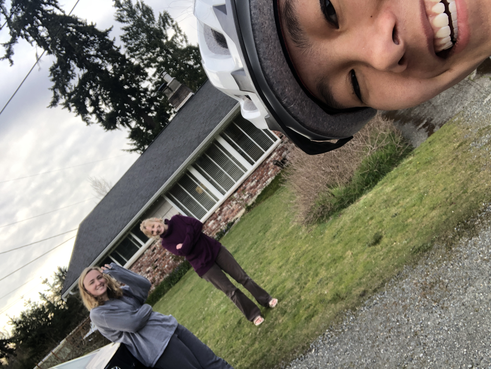

Kenneth Nguyen
Contact List
| kennethmainguyen@gmail.com | |
| Discord | kinokima (Kenneth)#3924 |
| kennethmnguyen |
About Me
I am in my second year at the University of Washington Bothell studying interactive media design mainly. Its something I'm intes If you want to see my digital portfolio, its on kennethmnguyen.com

During this COVID lockdown I've honestly been sleeping for very long times and not being the most productive. Watching a bunch of youtube videos and playing various different games. Glady though I was able to get ahold of some weights so I can still work out during a time where everything is closed.
Heres some games I've been playing during this COVID lockdown
- The Division 2
- TorchLight II
- Dragon Ball FighterZ
- DAEMON X MACHINA
- World War Z
My top 6 shoes that I wear normally
- 1985 Jordan 1, Chicago/Neutral (or Natural) Grey/UNC colorway (Luckily I've been able to find 3 pairs that are wearable in my size)
- Triple White Bapesta (basically knockoff Air force 1s)
- Off White Blazers
- Basic Old Skool Vans
- Rick Owen Ramones
- New balance 990v4
Britnie Chin
Contact List
| chinb8@uw.edu | |
| Portfolio | https://www.britniechin.com |
| britniechin |
About Me
I am currently in my second year at the University of Washington Bothell studying business and a prospective Human Centered Design and Engineering student. I want to combine my business and UX background to translate business objectives into responsible and satisfying user experiences.
Here are some research I have partcipated in:
- Pathways: Mapping HCDE Career Experiences
- Participatory Design with Children and Researchers
- KidsTeamUW: Creepy Project
- UX Skills + ____ = Leadership
During quarantine I have been watching Netflix, running, biking and working on research. I have been working with Jason Yip on the Creepy Project trying to understand what creepy technology means to kids. For my other research project I have been conducting semi structured interviews with UX Leaders to understand the pathway to leadership! I am currently looking for more research experience for the summer please connect with me on LinkedIn!
Here's a photo of me on a bike ride during quarantine!
Here are my favorite bike routes:
- Burke Gilman
- Interurban
- Lake Washington Loop
- Lake Sammamish Loop
- Interurban to Snohomish
Saahil Vasdev
About me
I am currently a sophomore at the University of Washington Bothell studying Computer Science & Software Engineering. I am looking forward to build onto my foundation and expanding into areas that involve product vision and developing.
I'm a big fan of sports especially basketball. I've been playing basketball since I was 5 years old. You can always catch me at LA Fitness shooting some ball. As you can see from the photo, I am a big Lakers fan. The mural was painted by Los Angeles artist Gustavo Zermeño Jr. when LeBron James just signed with the Lakers.

I've been gaming since I was a little kid. My gaming journey all started with a Nintendo 64. When I was given Super Mario 64, I was hooked. Ever since then, I've been playing video games. Recently, I've had the chance in playing Warzone and Valorant which have turned out to be very enjoyable games during the quarantine.
My favorite games of all-time:
- Super Mario Sunshine
- Super Mario 64
- Legend of Zelda: Ocarina of Time
- Red Dead Redemption 2
- GTA V
Here are some of the music artists I listen to:
- Kanye West
- Jay-Z
- Travis Scott
- Lil Uzi Vert
| My Favorite... | Answer |
|---|---|
| Fast Food Spot | Chick-Fil-A |
| Vacation Spot | Cancun, Mexico |
| Podcast | All the Smoke |
| Brand | Nike |
| Social Media |
During the quarantine, I've been catching up on a lot of TV shows. I recently started watching a show on Netflix called Trailer Park Boys. If you are into comedy I would totally recommend this show to you.
What I want to learn
Having the opportunity to learn languages such as Java, C#, & C++, learning HTML and CSS was something I've always wanted to learn. When I was selecting courses for this quarter, I was so glad that UWB offered a class that highlighted the basics of HTML and CSS. With the skills I learned from this class, I hope to make a basic website in the future to showcase some of my work from my classes taken here at UWB.
Get in touch with me!
If you want to discuss anything, you can reach me through my email, skv21@uw.edu. You can keep up to date with my GitHub account to see what coding projects I'm currently working on. If you have a LinkedIn, please connect with me on there as I look forward to discuss any sort of job opportunities!
Brandon Hu
About me
Contact Info
| bhu413@gmail.com | |
| Discord | bhu413#8812 |
| https://www.linkedin.com/in/bhu413/ | |
| Github | https://github.com/bhu413 |
I am a currently a junior at the University of Washington Bothell. My major is Applied computing and I have experience with Java and C++. Currently, I am working at the UW/Cascadia College as a student tech consultant where I help patrons with printing and common computer issues.
Here are a few classes I have taken:
- CSS 142 & 143
- CSS 342 & 343
- CSS 310
- BPHYS 121 & 122
- STMATH 124, 125, & 126
I am interested in computer networking and home automation. In my free time I like to game, make music, or just sleep. During this quarantine, I am trying to learn how to play Chopin's Nocturne No. 20 in C-sharp minor, Op. posth. I have a younger brother and a dog. Also, this is my favorite color (or close to it at least).
Here is my dog Coco:

Five songs I like at the moment
- Atoms - Said the Sky Remix by RL Grime, Jeremy Zucker, Said the Sky
- Higher Ground (feat. Naomi Wild) by ODESZA, Naomi Wild
- 44 More by Logic
- Down Below by Roddy Rich
- Best Part (feat. H.E.R.) by Daniel Caesar, H.E.R.